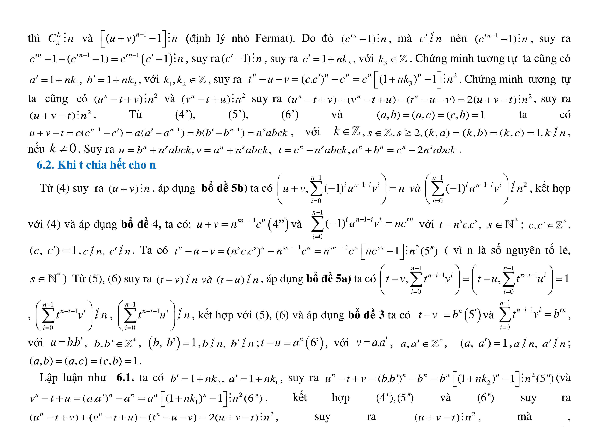

Trang in / The printed pages (bản in là căn cứ — the print is authoritative)



In the "Chứng minh tương tự" line, should the first listed congruence read a^n − b^n ≢ 0 (mod n) (matching the product in the statement and in the "Tóm lại" line), or should the product's first factor be a^n + b^n (matching the three sums actually proved)? One of the two printed signs must be a typo; with either reading the lemma is true, but only one makes the printed proof complete.
Trả lời ở cuối trang / reply at the bottom of this page, or edit reply-Q-001.md and send it back.
Lean cannot close the final "Tóm lại" step: the proof as printed establishes non-divisibility only for the three pairwise sums b^n + c^n, a^n + b^n, c^n + a^n, but the product's first factor is the difference a^n − b^n, which no step of the printed chain excludes. The exact spot is marked by the single sorry in pipeline/03-lean/Pilot/Basic.lean (theorem L7_frag_01, hypothesis h_factor1); every other step compiles.
Reproduction of the transcription (no Lean needed): extract lines 1053–1057
extract_pypdf.txt:1055 ... Chứng minh tương tự ta cũng có extract_pypdf.txt:1055 (a^n + b^n ≢ (mod n), c^n + a^n ≢ 0 (mod n)) . Tóm lại, ta extract_pypdf.txt:1057 luôn có: (a^n − b^n)(c^n + a^n)(c^n + b^n) ≢ 0 (mod n) (đpcm).
(pypdf drops superscripts; the ± signs are unambiguous. Confirmed independently against the page renders pipeline/01-extract/out/L7_proof_p4a.png, L7_stmt_p1.png, z_stmt_p1.png.)
L7-FRAG-01 (pipeline/02-chunks/chunks/L7-FRAG-01.yml)PROOF_of_FERMAT.pdf("thì ta có (a^n − b^n)(c^n + a^n)(c^n + b^n) ≢ 0 (mod n)")
tương tự ta cũng có a^n + b^n ≢ (mod n), c^n + a^n ≢ 0 (mod n). Tóm lại, ta luôn có: (a^n − b^n)(c^n + a^n)(c^n + b^n) ≢ 0 (mod n) (đpcm).")
pipeline/01-extract/out/extract_pypdf.txtlines 161–163 (statement) and 1053–1057 (proof tail).
Bản xem xét / review display: 01-extract/out/review/index.html — open the same page there to compare the print with the extract.

For prime n > 3 and integers a, b, c with n ∤ abc:
Lean statement of the conclusion, verbatim from the PDF statement: (a^n − b^n)(c^n + a^n)(c^n + b^n) ≢ 0 (mod n).
The author's proof steps were transcribed in order and, since the 2026-09-26 lane restart, verified step by step: the b^n + c^n reductio, the "chứng minh tương tự" instances for a^n + b^n and c^n + a^n, and then "Tóm lại" for the product. Verified Lean: 03-lean/L7/Basic.lean (L7_step_S0 … L7_step_S5b, see the update at the end of this query).
L7_step_S0L7_step_S1L7_step_S2L7_step_S3_S4L7_step_S5aL7_step_S5bNo numeric counterexample exists: python pipeline/04-sympy/test_l7_frag_01.py exits 0 (n = 7: 12 witnesses, n = 13: 24 witnesses, zero with product ≡ 0). The issue is proof coverage, not truth — the statement as printed verifies on every witness found.
The 2026-09-25 batch encoding was replaced by a one-step-per-compile lane. 03-lean/L7/Basic.lean now holds the author's chain, sorry-free, with only the permitted axioms (propext, Classical.choice, Quot.sound):
L7_step_S3_S4 — "Nếu b^n + c^n ≡ 0 (mod n) ⇒ … ⇒ n = 3, vô lý", so b^n + c^n ≢ 0 (mod n);
L7_step_S5a — a^n + b^n ≢ 0 (mod n);L7_step_S5b — c^n + a^n ≢ 0 (mod n).So the printed chain provably yields non-divisibility for the three pairwise sums a^n + b^n, b^n + c^n, c^n + a^n — and the stated product's first factor is still the difference a^n − b^n, for which the print gives no step. S6 ("Tóm lại") is therefore left unencoded: it is the one step the printed chain does not support. 03-lean/Pilot/Basic.lean is the frozen pre-restart exhibit quoted above (no longer imported by anything; the single sorry still marks the gap). The question for the author is unchanged.
Open pipeline/01-extract/out/review/index.html (19 MANUAL pages) and open the two pages below. Left pane = authoritative render; right pane = the REVIEWED LaTeX of each region, with its crop link under the region id.
Spot 1 — the statement (p. 2 top; "Bổ đề 7:" itself starts on p. 1 bottom)
out/review/page-002.html → region R1, first LaTeX lineout/page-002-300dpi-region-01.png (or out/L7_stmt_p2.png)out/review/ has no page-001 (p.1 is fidelity-PASS); see regions/p001.yml R3, crop out/page-001-300dpi-region-03.png
… thì ta có (a^n - b^n)(c^n + a^n)(c^n + b^n) ≢ 0(mod n)→ first factor carries minus.
Spot 2 — the proof tail (p. 5 bottom)
out/review/page-005.html → region R2, last-but-one LaTeX block pair (Vậy … / luôn có: …)
out/page-005-300dpi-region-02.png (or out/L7_proof_p5a.png) ⇒ 3 ≡ 0 (mod n) ⇒ n=3, vô lý → Vậy b^n + c^n ≢ 0 (mod n) → Chứng minh tương tự … a^n + b^n ≢ (mod n), c^n + a^n ≢ 0 (mod n) → Tóm lại, ta luôn có: (a^n - b^n)(c^n + a^n)(c^n + b^n) ≢ 0 (mod n) (đpcm). Three sums are excluded; the product then prints a difference as its first factor.
The four conclusions this chunk does not cover — same statement block, out/review/page-002.html region R1, LaTeX lines 2–3 (crop out/page-002-300dpi-region-01.png):
a^{n²} + b^{n²} − c^{n²} ≡ 0 (mod n²) — display (a); proved on p. 4 (review page-004.html R2/R3, crops page-004-300dpi-region-0{2,3}.png).
≡ b^n c^n + a^{2n} ≡ c^n a^n + b^{2n} ≡ b^n a^n − c^{2n} ≡ 0 (mod n²) — proved on p. 5 region **R1** (b^{3n}+c^{3n} chain + bổ đề 5c/5d) with the a^{2n}+b^n c^n` block at the top of region R2.
n ≡ 1 (mod 6) — proved on p. 5 region R2 (`Vì n là số nguyên tố lớn hơn 3 nên n ≡ ±1 (mod 6) … Vậy n ≡ 1 (mod 6) (đpcm).`).
b^{n(n−4)} + c^{n(n−4)} ≡ a^{n(n−4)} − b^{n(n−4)} ≡ 0 (mod n²) — the first congruence is proved in p. 5 region **R2** (* Ta có c^{2n} − a^n b^n ≡ 0 … ⇒ b^{n(n-2)} + a^{n(n-2)} − c^{n(n-2)} ≡ 0 (mod n²) (đpcm).), the remaining three at the end of R2 (Vì n ≡ 1 (mod 6), nên n = 6l + 1 … a^{n(n-4)} − b^{n(n-4)} ≡ 0 (mod n) (đpcm).`).
pipeline/04-sympy/test_l7_frag_01.py (statement as printed: PASS)pipeline/03-lean/Pilot/Basic.lean (single sorry at the gap)pipeline/05-feedback/assets/Q-001-p4-5-proof.pngF3 (fill-in from the author's own material, no new assumption): S5a's "a^n + b^n ≢ 0 (mod n)". The b^n + c^n chain is vacuous for that pair (its cancellation needs b ≢ 0 and the pair is (a,b)); the printed claim follows from the print's own (b) and S0: if a^n + b^n ≡ 0 then c^n ≡ a^n + b^n ≡ 0, so n ∣ c^n and, n being prime, n ∣ c — contradicting c ≢ 0 (mod n). Encoded as L7_step_S5a.
F4 (unchanged, the chunk's open finding): S6 — the printed chain establishes ≢ 0 (mod n) for the three pairwise SUMS a^n+b^n (S5a), b^n+c^n (S3+S4) and c^n+a^n (S5b), while the product's first factor is the DIFFERENCE a^n − b^n, which no printed step excludes (sign mismatch; text-layer verified, so not F1). Author query Q-001 OPEN: the statement is true as printed on every witness the sympy screen found, but the printed proof does not cover it.
F3 = a gap we filled from your own material (no new assumption). F4 = a proof step Lean could not verify; it needs your answer above.
Gõ vào ô dưới đây rồi copy vào email, hoặc sửa tệp
reply-Q-001.md. / Type below and paste into an
email, or edit the reply template file.
In trang này và viết tay / print this page and write by hand: